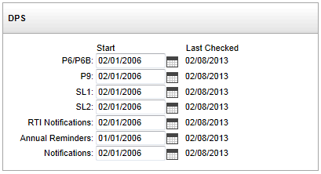
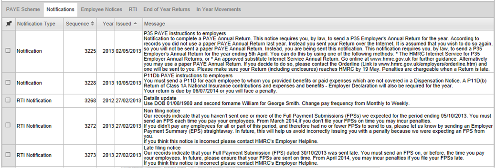
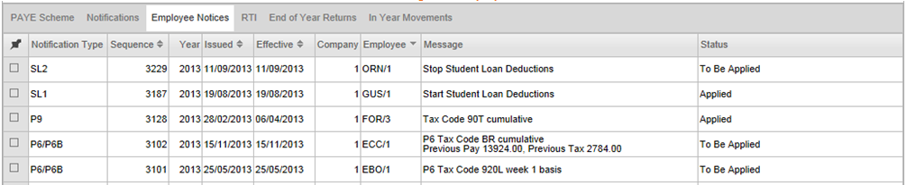

The Data Provisioning Service (DPS) is a system that HMRC uses to make notices and reminders available.
The DPS Report uses the DPS to request any new messages from HMRC for each DPS data type on every PAYE scheme sequentially where a start date has been set. The report can be scheduled to download messages regularly. The messages received can then be viewed in the HMRC Workbench, on the Notifications or Employee Notices tab (depending on the type of message).
The DPS layout on the PAYE Scheme tab of the HMRC Workbench allows you to enter the information required for using the Outgoing Data Provisioning Service.
1
This allows you to set the Start Date for each of the seven DPS data types:
The Last Checked date is a read-only field for information only.
Messages are downloaded from the DPS using DPS Report. Messages will only be downloaded when a start date is set and this start date is not in the future. If the start date is changed,
For each PAYE scheme, the report shows a line per DPS data type with the initial pre-existing number of actions still to be applied, the number of new messages downloaded, the number of actions applied now (for employee messages), the number of actions which cannot be applied, the total number of outstanding actions to be applied and a message, if needed, which will show the error message returned if the request failed for any reason or the fact that
For NI number responses the employee record will always be updated, if appropriate, when the message is downloaded to correct or blank out the NI number and adjust the verification status to either blank (when no NI number found) or ‘Verified’ (when we know we have a correct NI number).
For tax code and student loan changes the update will be made only if the employee is in the START stage of the Payroll cycle and the change is applicable at the time (based on the effective date on the DPS message).
The Notifications browse on the global HRMC Workbench displays all employer level messages received from the DPS; these are those for:
as well as some of the RTI Notifications.

The Employee Notices browse on the frequency-specific versions of the HMRC Workbench displays all employee level messages received from the DPS; these are those for:
